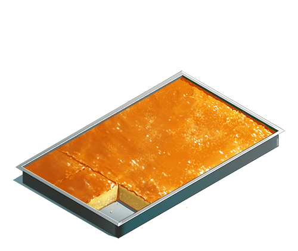
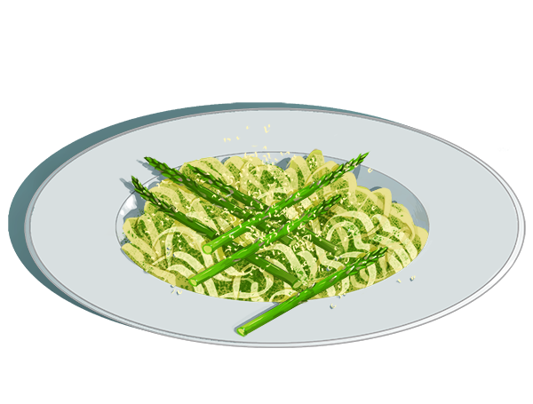
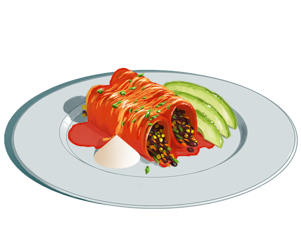

Tomato Cheese on Toast
Tomato Cheese on ToastA Cannon Family Classic serves 2
-Ingredients-
- 1 can Condensed Campbell's Tomato Soup
- 200g Velveeta cheese or sharp cheddar, cut into thin slices
- 1 cup milk
- 4 slices of wholegrain toast (stale bread can also be used)
- Add tomato soup to a medium size pot, then fill the can with milk and also add that. This helps to really clean out the can.
- Heat on medium high until the soup begins to boil, keep stirring it to combine. Should take 5-10 minutes.
- Toast your toast.
- Prepare the bowls with the slices of cheese. Once the soup is ready, pour it over the cheese so it melts. The tear up a slice of toast and also add that to the bowl. Enjoy!



Butter Mochi
Adapted from my aunt
Note: I halved the original recipe, which made a whole baking sheet and used 5 eggs.
Adapted from my aunt
Note: I halved the original recipe, which made a whole baking sheet and used 5 eggs.
-Ingredients-
- 1/2 box mochiko rice flour
- 1 1/2 tsp baking powder
- 3/8 stick of butter at room temperature
- 1 cup milk
- 1/2 can coconut milk
- 2 eggs
- 1/2 tsp vanilla (or one package vanilla sugar)
- 1 cup sugar
- Preheat the oven to 350°.
- Beat butter and sugar together, then add eggs one by one, then add the rest of the wet ingredients and combine.
- Add dry ingredients and mix together.
- Grease a pie form and fill with batter. Bake for ≈ 40-50min or until golden-brown on top and set. Cool before enjoying. Itadakimasu!

Linguine agli asparagi e pesto
serves 2-3
serves 2-3
-Ingredients-
- 250g linguine (or substitute pasta of choice)
- Zoodles (2 cups spiralized zucchini)
- Asparagus, cleaned and cut into thirds (1 package)
- Optional Almonds or walnuts (≈ 6)
- Fresh basil leaves (Handful)
- 3 tbsp olive oil
- 1/2 cups grated parmesan cheese
- 2 garlic cloves
- Cook pasta according to package instructions. About 2-3 minutes before the time is up, also add the zoodles. Then drain.
- Char the asparagus in a cast iron pan with no oil, rotating once, for about 10 minutes. Then remove and set aside.
- Blend the nuts, basil, olive oil, parmesan cheese, basil and garlic with a food processor or immersion blender to make the pesto.
- Toss everything together in a bowl and serve right away. Add pepper and salt to taste. Delizioso!

Vegetarian DSW Enchiladas
serves 4, but also makes great leftovers!
serves 4, but also makes great leftovers!
-Ingredients-
- 10-12 large flour tortillas (give or take)
- 3 cups mixed frozen vegetables
- 2 cans beans (black, pinto, kidney...)
- 1 large can red enchilada sauce OR for extra school lunch authenticity just use salsa
- 1 cup grated cheese
- sour cream to serve
- Preheat oven to 350°.
- Drain beans in a colander, add mixed vegetables and wrinse with water.
- Pour a little bit of enchilada sauce into the bottom of a glass baking pan, then line up the tortillas in "U" shapes until the pan is filled. They should stay in place on their own.
- Spoon in the bean-vegetable filling so that it is equally portioned out among the tortillas.
- Roll the tortillas up and rotate them so that they don't unravel..
- Cover with enchilada sauce and grated cheese.
- Bake for about 25 min until the cheese is bubbly on top and the insides are thoroughly heated.
- Serve with sour cream. Other good toppings are hot sauce, avocado and cilantro. ¡Que aproveche!